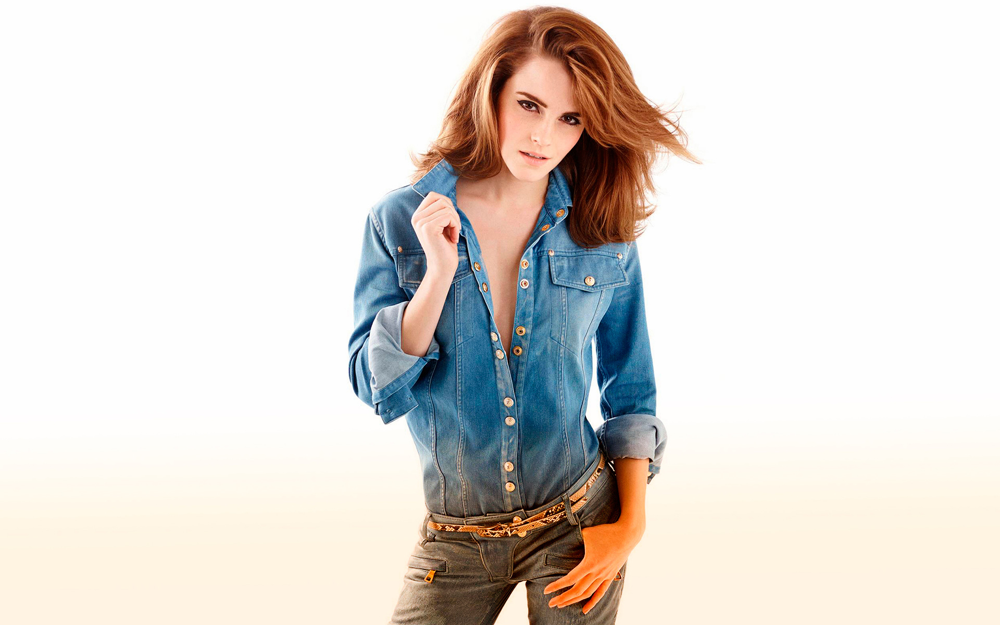
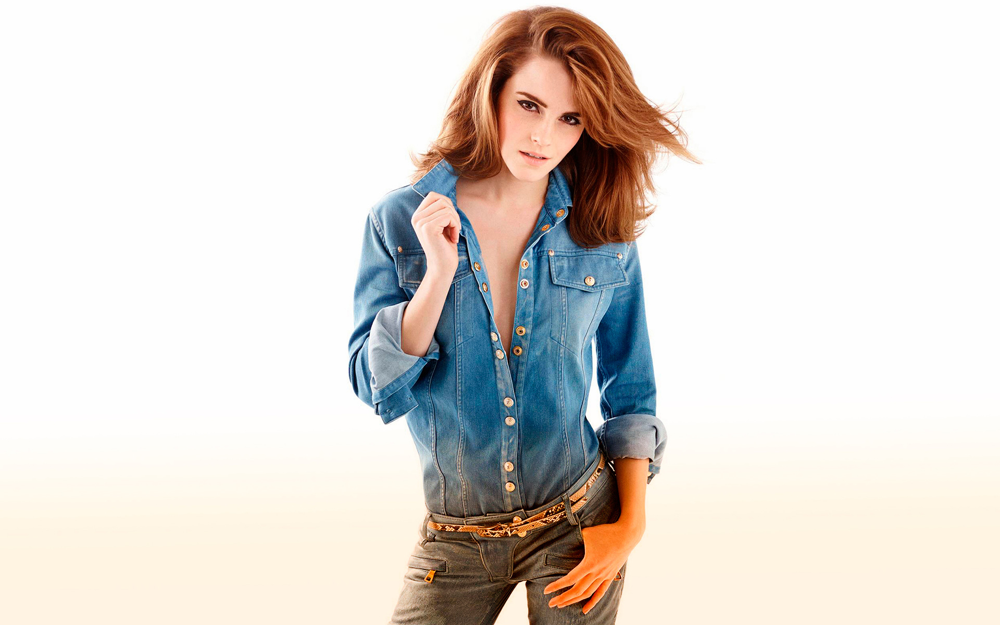
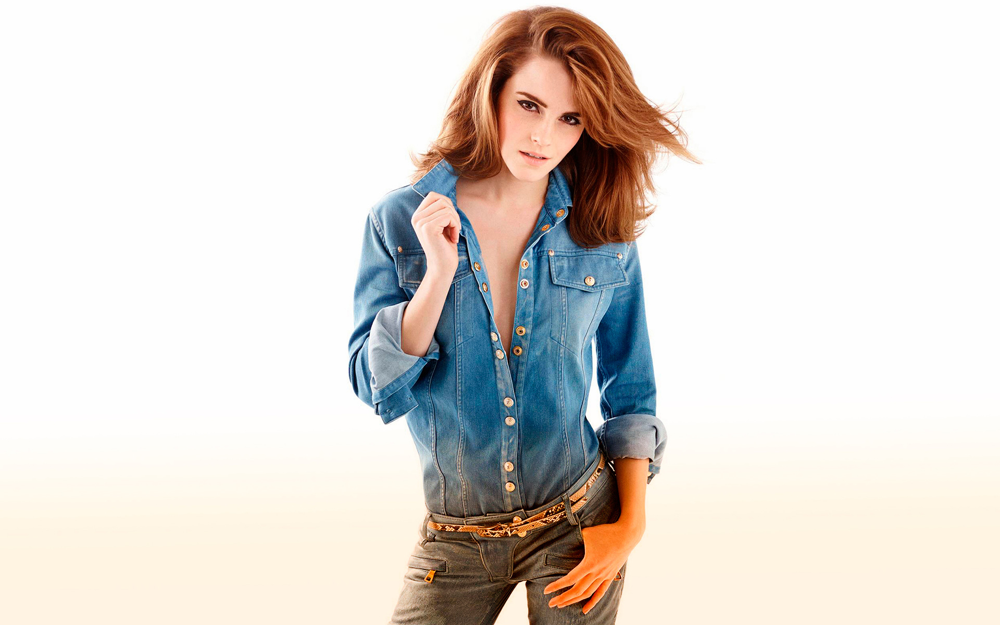
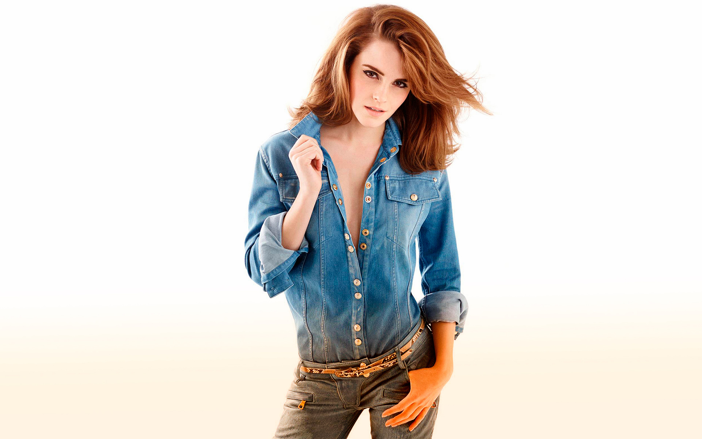

Emma Charlotte Duerre Watson (born 15 April 1990) is a British actress, model, and activist. Born in Paris and brought
up in Oxfordshire, Watson attended the Dragon School and trained as an actress at the Oxford branch of Stagecoach Theatre
Arts. She rose to prominence after landing her first professional acting role as Hermione Granger in the Harry Potter film
series, having acted only in school plays previously. Watson appeared in all eight Harry Potter films from 2001 to 2011,
earning worldwide fame, critical accolades
She was honoured by the British Academy of Film and Television Arts in 2014,
winning for British Artist of the Year. That same year, she was appointed as a UN Women Goodwill Ambassador and helped
launch the UN Women campaign HeForShe, which calls for men to advocate gender equality.